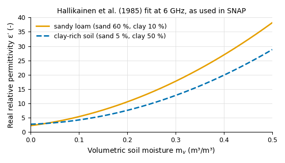

| SAR Concepts: Soil Moisture from SAR | |
Water raises the dielectric constant of soil, and that raises radar backscatter. Retrieving moisture means separating this effect from surface roughness and vegetation, which change backscatter just as strongly. SNAP does it in two steps: invert a surface-scattering model (IEM) for the dielectric constant, then convert the dielectric constant to volumetric moisture.
The relative permittivity εr = ε′ − jε″ is a dimensionless ratio to the permittivity of free space. Dry soil has ε′ of a few units; liquid water at C-band has about 70 to 80. Adding water therefore raises ε′ steeply (Figure 1). The moisture is expressed as volumetric content mv in m³/m³ (0 to about 0.5).
Hallikainen et al. (1985) fitted measurements on five soils between 1.4 and 18 GHz with a polynomial in moisture and texture, one set of coefficients per frequency:
ε′ = (a0 + a1S + a2C) + (b0 + b1S + b2C) mv + (c0 + c1S + c2C) mv2
S and C are the sand and clay contents in percent. Clay holds part of the water as bound water, which has a much lower permittivity than free water, so clay-rich soils have a lower ε′ at the same moisture. Dobson et al. (1985) model this with a semi-empirical mixing model of soil, air, bound and free water. Mironov et al. (2009) use a spectroscopic model driven by clay content and frequency.

Figure 1. ε′ versus mv from the Hallikainen polynomial with the coefficients SNAP uses (6 GHz fit). At mv = 0.3 the sandy loam reaches about 18 and the clay-rich soil about 13.
A bare soil surface is described statistically by the rms height s (vertical roughness) and the correlation length l (horizontal distance over which heights stay correlated), together with the shape of the autocorrelation function (ACF), which describes how height correlation decays with distance. Roughness is expressed relative to the wavelength as k·s and k·l, with k = 2π/λ. A rougher field is brighter, so a dry rough field and a wet smooth field can give the same σ0. Roughness also changes with tillage and rain, so it cannot be treated as known.
The Integral Equation Model (Fung, Li and Chen 1992) predicts co-polarised backscatter from a randomly rough dielectric surface:
σ0pp = f(εr, s, l, ACF, θ, λ), pp = HH or VV
It is a forward model. Inverting it means finding εr, s and l from one to four measured backscatter values, each with speckle (after multilooking) and calibration errors of a fraction of a dB. Different combinations of roughness and moisture predict nearly the same σ0, so the solution is not unique. Inversion is practical only with a reduced number of unknowns and several independent observations.
Calibrated IEM. The correlation length is the hardest parameter to measure and the least reliable. Baghdadi et al. (2004, 2006) replace it with an empirical "optimal" correlation length, a function of rms height, incidence angle and polarisation, fitted to C-band SAR data and field measurements. The model then has two unknowns, s and εr.
SNAP inverts by lookup table (LUT). The LUT holds IEM backscatter for many combinations of s, l (or s only for the calibrated IEM) and ε′, at each integer incidence angle. For each pixel, the N LUT entries whose backscatter is closest to the measurement are candidates.
| Approach | Input images | Observations | Unknowns | LUT |
|---|---|---|---|---|
| Multi-polarisation | 1 (HH and VV) | 2 | s, ε′ | calibrated IEM |
| Multi-angle | 2 at different incidence angles, one polarisation each | 2 | s, ε′ | calibrated IEM |
| Hybrid | 2 at different incidence angles, HH and VV each | 4 | s, l, ε′ | original IEM |
The two images of the multi-angle and hybrid approaches come from different passes over the same field (for example ascending and descending, called AM and PM in SNAP) and must be acquired while moisture and roughness are unchanged.
The IEM describes bare soil. A crop canopy adds its own backscatter and attenuates the soil contribution. The Water Cloud Model (Attema and Ulaby 1978) treats the canopy as a cloud of water droplets. In its commonly used form:
σ0 = A V1 cos θ (1 − τ2) + τ2 σ0soil, τ2 = exp(−2 B V2 / cos θ)
V1 and V2 describe the vegetation (for example its water content), and A and B are fitted per crop. SNAP's IEM chain has no vegetation correction. Results are meaningful for bare or sparsely vegetated fields; at C-band, sensitivity to soil moisture drops as the canopy grows.
Sigma0_HH/HH and
Sigma0_VV/VV, linear or dB) and an incidence-angle band (name containing
incidenceAngle or LIA, in degrees). Two-image inputs are stacked into one
product first.RDC (real relative dielectric constant, dimensionless, with no band unit),
optional rms (cm) and cl (cm, hybrid
only). An outlier flag band is added only when the preference
snap.soil_moisture.output_outlier is true.lutFile, the bundled RADARSAT-2 C-band LUTs are used: calibrated IEM for
multi-pol and multi-angle, original IEM for hybrid. They cover incidence angles 18° to 61°,
s = 0.3 to 2.6 cm, l = 1 to 25 cm and ε′ = 3.1 to 38.7.N (default 5) nearest LUT entries per pixel are compared with the
mean ε′ of an M × M neighbourhood (M, default 5). A candidate is
accepted when its relative deviation is within thresholdRDC (default 0.5); otherwise
the neighbourhood average is used if "Filter remaining outliers" is on (default).RDC to the sm band
(m³/m³) and a quality index (0 = good, 1 = min/max limit reached, 10 = no
RDC, 11 = no sand/clay, 12 = no solution). modelToUse is Hallikainen (default; needs
bands named Sand and Clay in percent) or Mironov (needs Clay,
the radar frequency from the metadata and effectiveSoilTemperature, default
18 °C). minSM/maxSM default to 0 and 0.55. Dobson is not
offered.auxdata/sm_luts/soil_moisture.config and
are the 6 GHz fit, whatever the sensor frequency.RDC as a value in Farad/m. It is a dimensionless ratio.